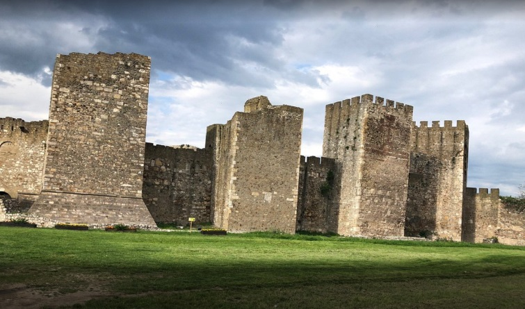

2. A Å¡to si se, Jano,...
Comment, Yana, t'es-tu...
(Peta Rukovet - 5ème guirlande : 00;25 - 00:56)

Image illustrant l'article de ÄorÄe PeriÄ cité en note
"A Å¡to si se, Jano, rosom orosila" Mokranjac, 5a Rukovet |
"Ko t' pokida s grla Äerdane" . Peva Radmila DimiÄ (1922-1991) |
"Ko t' pokida s grla Äerdane" . Peva Nada Mamula (1927-2001) |
|
 Kornelije StankoviÄ (1831-1865) |
 Franjo-Ksaver KuhaÄ (1834-1911) |
 Aleksa Å antiÄ (1868-1924) |
 Jovan PopoviÄ (1905-1952) |
 Radmila DimiÄ (1922-1991) |
 Nada Mamula (1927-2001) |
NOTES
|
Pesma kao inspiracija: "A Å¡to si se, Jano, rosom orosila" Kornelije StankoviÄ Prvi srpski kompozitor i melograf, Kornelije StankoviÄ (1831â1865), zapisao je notno i tekstovno ovu pesmu i objavio je u svojoj knjizi Srbske narodne pesme, BeÄ 1862, br.9. Sve pesme iz te zbirke koje je ''skupio, u note, za pevanje i klavir napisao'', posvetio je ''Njegovoj Svetlosti Gospodaru Mihailu ObrenoviÄu, knezu Srbskom''. Gde je nastala zbirka pesme? VeÄinu pesama u tom izdanju Kornelije je zapisao na svojim putovanjima kroz kneževinu Srbiju (1861/2), koja su obuhvatala gradove: Beograd, Å abac, Valjevo, ÄaÄak, Užice i Kragujevac. I pesmu "A Å¡to si se, Jano!" on je zapisao uživo, na terenu, od pevaÄa koji mu je pevao na licu mesta. PevaÄ je govorio Å¡tokavski, ijekavskim nareÄjem, koji je verno prenet u tekstu pesme, i taj zapis je naÄinjen u gradovima Zapadne Srbije gde se tako govorilo: u ÄaÄku ili u Užicu. Tekst pesme sa naslovom "Äe si bila, Jano!?" u kome se podrazumeva usmeni razgovor (dijalog) majke i Äerke. (Vidi gore) Uticaj F. KuhaÄa (1878) na tekst 5. Rukoveti Prilikom obrade pesme za Petu Rukovet, Mokranjac ne preuzima prvi stih po Kornelijevom zapisu; kod njega je: "A Å¡to si se, Jano, rosom orosila". A tako glasi prvi stih u joÅ¡ jednom objavljenom melografskom zapisu pesme, zapisanom pre Mokranjca. Podsetimo se da je istu pesmu u notama, sa potpunim tekstom objavio i hrvatski melograf Franjo KuhaÄ (1834-1911) u svom zborniku "Južnoslovjenske narodne popievke", Zagreb 1878, knj. I, br.384 "Jana se orosila (Iz Srbije)". Kako je prva knjiga KuhaÄevog zbornika objavljena i Äirilicom, Mokranjac je mogao koristiti to izdanje za svoj poÄetni stih i ceo tekst. Tekst kod KuhaÄa je bio neÅ¡to Äedniji, nego u slobodnijem Kornelijevom zapisu, mada se sadržajno uzevÅ¡i, svodi na isto. (Vidi gore) Književno potomstvo StankovicÌevog pevanja Narodna pesma" A Å¡to si se, Jano, rosom orosila" poslužila je svojim sižeom i za nekoliko pesama u umetniÄkom pesniÅ¡tvu u kojima se prepoznaje sliÄna tema: devojka ranom zorom odlazi u prirodu; u povratku sreÄe je majka i pita je: zaÅ¡to joj je oroÅ¡en Äerdan? Ona iznosi celu istinu kao Å¡to stoji u tekstovnom zapisu pesme Kornelija StankoviÄa. Pesma A. Å anticÌa Jednu uspelu umetniÄku obradu ove narodne pesme dao je poznati srpski pesnik Aleksa Å antiÄ (1868â1924). Njegova popularna pesma, Pod jorgovanom, koja se i danas peva kao hercegovaÄka sevdalinka obraÄuje majkin i Äerkin dijalog tako Å¡to je ispit neÅ¡to strožiji: u narodnoj pesmi samo jedno pitanje i jedan odgovor, u Å antiÄevoj su tri. (Vidi gore). Obrada pesme "Pod jorgovanom" Pesnik je godinama prepravljao ovu pesmu, koja je najpre nosila naslov Jela (1907), da bi se potom ustalio novi: Pod jorgovanom (1908). - U prvim tekstovima pesme majka postavlja Äerki Å¡est pitanja, od kojih tri odbacuje: "Ko poÅ¡kropi tvoje kose, Jelo / Ko orosi tvoje lice bjelo? - drugo: A zaÅ¡to ti plam u lice bije / Jao, Å¡Äeri, da vruÄica nije!?"; - i treÄe: Hajd' na izvor, rashladi se, Jelo, / umij lice i to grlo bjelo!. Poslednja redakcija teksta, koju je pesnik ostavio, ima sedam distiha. U prva tri distiha pesnik je u dijalogu majke i Äerke upotrebio Å¡est stihova: dva za majku, a Äetiri za Äerku. Ali, to pravilo nije sproveo do kraja. Pesma J. PopovicÌa; "Ko t' pokida s grlo žerdana" Kada je ovu pesmu komponovao dr Jovan PopoviÄ morao je da sledi to pravilo, pa je u sledeÄim distisima dopunio Äerkinu repliku sa joÅ¡ po dva stiha kako je zahtevao obim kompozicije. Ovde su ta dva distiha dodati u zagradama. Pesma "Ko t' pokida sa grla Äerdane", inspirisana narodnom pesmom A Å¡to si se, Jano, rosom orosila, peva se danas kao sevdalinka, kojoj su zaboravljeni autori, pesnik Aleksa Å antiÄ i kompozitor dr Jovan PopoviÄ (1905-1952). Mada nije ostalo zapisano seÄanje, pesnik je mogao da naÄe inspiraciju za svoju pesmu i sluÅ¡anjem MokranjÄeve V Rukoveti (1892) sa kojim je bio veliki prijatelj. Poznato je da se Å antiÄ bavio i komponovanjem, zapisivanjem hercegovaÄkih narodnih pesama i izvoÄenjem kompozicija drugih srpskih kompozitora, pa i Rukovetima Stevana Mokranjca. Autor:ÄorÄe PeriÄ |
"A Å¡to si se, Jano, rosom orosila?" Un chant devenu une source d'inspiration. Kornelije StankoviÄ Le grand compositeur et ethnomusicologue serbe, Kornelije StankoviÄ (1831-1865), a consigné la musique et les paroles de ce chant et les a publiés à Vienne, en 1862, dans son recueil de "Chants populaires de Serbie", sous le n° 9. Il dédiait tous ces chants avec mélodie et accompagnement de piano "à u "Monarque éclairé Michel ObrenoviÄ, Prince de Serbie". Localisation du collectage La plupart de ces chants furent notés par StankoviÄ lors de voyages à travers la principauté de Serbie (1861/2), qui le conduisirent dans les principales villes: Belgrade, Å abac, Valjevo, ÄaÄak, Užice et Kragujevac. C'est ainsi qu'il recueillit le chant "Comment Jana, t'es-tu...", de la bouche d'un chanteur, lors d'une de ces enquêtes de terrain. Ce chanteur parlait Å tokavien, un sous-dialecte de l'Ijekavien, fidèlement reproduit dans le texte du chant. On en déduit que ce collectage a été réalisé dans une ville de l'ouest de la Serbie où l'on parle ainsi : ÄaÄak ou Užice. Le texte du chant est intitulé "Äe si bila, Jano?", ce qui annonce un dialogue entre une mère et une fille. (Cf.ci-dessus). Influence de F. KuhaÄ (1878) sur le texte du 5. Rukovet Lors de l'arrangement de ce chant pour la Vème Rukovet, Mokranjaca modifié le premier couplet tel que Kornelij l'avait noté. Chez lui il devient : "Pourquoi es-tu couverte de rosée, Jana ?" C'est le texte du premier couplet d'un autre collectage de ce chant publié avant Mokranjac. Signalons que le même chant, avec partition et paroles complètes, a également été publié par le folkloriste croate Franjo-Ksaver KuhaÄ (1834-1911) dans son recueil de chants populaires yougoslaves, à Zagreb 1878, vol. I, n° 384 sous le titre "Jana se orosila (Chant de Serbie)". Comme la première édition du recueil de KuhaÄ Ã©tait en cyrillique, Mokranjac pouvait en outre en citer tels quels le vers d'introduction et l'intégralité du texte. Le texte de KuhaÄ Ã©tait un peu plus convenable que les polissonneries notées par StankoviÄ, bien le contenu, tout compte fait, soit le même. (cf.ci-dessus). Postérité littéraire du chant de StankoviÄ Le chant populaire "A Å¡to si se, Jano, rosom orosila" a servi d'argument à plusieurs poèmes littéraires dans lesquels on reconnaît un thème similaire: une fille va dans la nature à l'aube. A son retour elle tombe sur sa mère qui lui demande : pourquoi son collier est humide de rosée ? Et la fille dévoile toute la vérité conformément à ce que raconte le chant de StankoviÄ. Le poème d'A. Å antiÄ On doit une transposition littéraire tout à fait réussie de ce chant au célèbre poète serbe Aleksa Å antiÄ (1868-1924). Son poème, "Pod jorgovanom", qui est toujours chanté et que l'on prend généralement pour une "sevdalinka" herzégovine, reprend la formule du dialogue entre la mère et la fille, mais l'interrogatoire y est plus serré: il y avait un seul échange question - réponse chez StankoviÄ; il y en a trois chez Å antiÄ! (Cf. ci-dessus) Elaboration de "Sous le lilas" Pendant des années, le poète a travaillé ce texte, qu'il intitula d'abord "Jela" (1907), avant de lui donner son nouveau titre: "Pod jorgovanom" ("Sous le lilas"), en1908. Dans la première version du poème, la mère pose six questions à sa fille, dont trois que celle-ci élude : - Qui t'a mouillé les cheveux, Jela / Qui a humecté de rosée ton blanc visage blanc? Puis : - Pourquoi as-tu le visage enflammé? / Dis-moi, ma fille, aurais-tu donc la fièvre? Et enfin : - Va à la source te rafraîchir, Jela, / Inonde-toi le visage et la gorge!. La dernière version du texte que le poète nous a lêguée, compte sept distiques. Les trois premiers comportent six vers que le poète consacre au dialogue entre la mère et la fille : deux pour la mère et quatre pour la fille, sans qu'il ait appliqué ce schéma de bout en bout. La chanson de J. PopoviiÄ: "Ko t' pokida s grlo žerdana" Lorsque Jovan PopoviÄ (1905-1952) en fit une chanson, il prolongea les distiques suivant chaque réplique de la fille, de 2 lignes conformément à la structure de la composition. On pense généralement que le chant "Ko t' pokida s grlo žerdana", inspiré de "A sto si se, Jano, rosom orosila", est une "sevdalinka" (romance bosniaque), dont on aurait oublié les auteurs (qui sont en réalité, Aleksa Å antiÄ et Jovan Popovic). Bien qu'il n'existe aucun témoignage écrit dans ce sens, Å antiÄ a pu être inspiré par la 5ème Rukovet (1892) de son grand ami Mokranjac. Comme on le sait, Å antiÄ s'est également consacré à l'arrangement et à la transcription de chants d'Herzégovine et à l'interprétation d'oeuvres d'autres compositeurs serbes, dont les "Rukoveti" de Stevan Mokranjac. Auteur: ÄorÄe PeriÄ https://srbijuvolimo.rs/moja-srbija/kultura/item/5941-pesma-kao-inspiracija-a-%C5%A1to-si-se,-jano,-rosom-orosila.html |
2. ШÑо гÑад СмедеÑево ваздан заÑвоÑено
A quoi bon tout le jour être close, citadelle de Smédérévo?
(Un chant du répertoire de Radmila DimiÄ)
|
|
|
 "Å to grad Smederevo" . Peva Radmila DimiÄ (1922-1991) |